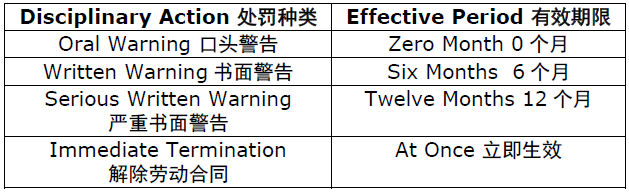

返回主页
处罚种类及有效期限

处罚种类列表（口头警告和书面警告）
处罚种类列表（严重书面警告和立即解除劳动合同）
有关以奖抵罚的规定
备注：
上述有效期限自警告信生效当天起算。
如果员工已有处罚，且在该等处罚的有效期内再次发生违纪行为的，各项违纪处罚的有效期限将会采取合并计算原则，即以最后一次违纪处罚的期限届满之日为准。
Note:
Above effective period will be calculated from the approved date of warning letter.
In case that the employee has got disciplinary action, and commits another misconduct within the effective period of current disciplinary action, the effective period of all the disciplinary actions will adopt the principle of combined calculation, and the effective period will determined by the expiry of the period of last disciplinary action.
例如： 第一次：某员工于2008 年1 月1 日因违反ESD 防静电规则被给予书面警告，处罚期限为6 个月，即到2008 年5 月31 日止；
第二次：该员工又在该书面警告有效期内2008 年3 月3 日，因滥用厂牌，被给予书面警告，则该员工的警告最后处罚期限延长至2008 年9 月2 日结束。
For Example:
First Misconduct: One employee was given a written warning on Jan 1st, 08 due to violation of ESD rules and the effective period is 6 months (means ending on May 31st, 08)
Second Misconduct: Within the effective period of this written warning, the employee was given another written warning for brand abuse on March 3rd, 2008, thus the employee's final warning effective date will postpone to September 2nd, 2008.
如果你对本应用程序或手机网站有任何疑问，请咨询捷普电子（广州）有限公司人力资源部。
If you have any questions about this app/web, please do consult with Jabil Circuit (Guangzhou) Ltd HR department.
version:1.0; jobnet@188.com © retter2012.com